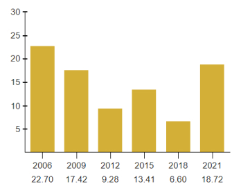

Consolacion’s journey began in 1871, when it transitioned from a small barrio of Mandaue into an independent town,
thanks to the vision of its first leader, Juan Villamor. Named after the daughter of the Spanish Governor as a gesture
of gratitude, Consolacion has grown into a thriving municipality while cherishing its deep cultural and historical roots.
From the early construction of its first municipal building and church, to surviving typhoons, wartime destruction,
and financial challenges, Consolacion’s resilience has defined its character. Its rich heritage is preserved through
landmarks like the San Narciso Parish Church and traditions like the sarok-making craft.
Today, Consolacion continues to balance modern development with its historical identity, embodying the enduring spirit of its community.
Teresa Pepito Alegado
Mayor
Aurelio A. Damole
Vice Mayor
Daphne A. Lagon
Representative
Municipal Council
Alfred Francis M. Ouano
Lalinka B. Villo
Fredelino T. Herrera
Brando P. Cuizon
Marilou P. Casul
Leo B. Napuli
Bienvenido G. Ermac
Salome I. Palang
Discover the economic progress of Consolacion through this graph showcasing poverty incidence trends from 2006 to 2021. This visual data highlights the town’s economic journey, providing insights into its growth and ongoing challenges.
Poverty Incidence of Consolacion
This section highlights the total kilometers of roads in Consolacion, including national, provincial, municipal, and barangay roads. It provides an overview of the town's infrastructure, showing how its road network connects communities and supports daily activities.
National Roads
1.5 km
Provincial Roads
2.5 km
Municipal Roads
2.0 km
Barangay Roads
43.7 km
Consolacion is home to a growing number of schools, providing access to quality education for its residents. The town also hosts a vocational school and a college, offering specialized training and higher education opportunities to support personal and professional growth.
16 Elementary schools
10 High schools
Vocational School:
Consolacion Computer Institute
College:
Cebu Technological University
Consolacion Campus